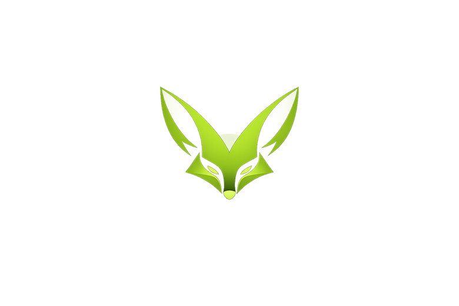

Nuestra misión
Crear software confiable y de calidad que ayude a nuestros clientes a crecer, optimizar procesos y destacarse en un mercado cada vez más competitivo.

En Fennec, creemos que el software es una herramienta para resolver problemas reales y crear oportunidades. Somos un equipo de desarrolladores apasionados por la tecnología, enfocados en construir soluciones modernas, escalables y de alto rendimiento para empresas, emprendedores y startups.
Nos especializamos en transformar ideas en productos digitales funcionales, combinando diseño, innovación y buenas prácticas de desarrollo para ofrecer resultados que generen valor desde el primer día.
Crear software confiable y de calidad que ayude a nuestros clientes a crecer, optimizar procesos y destacarse en un mercado cada vez más competitivo.
Convertirnos en un aliado tecnológico de referencia, reconocido por la excelencia técnica, la transparencia y el compromiso con cada proyecto.
En Fennec no solo desarrollamos software; construimos herramientas que impulsan ideas y potencian negocios.